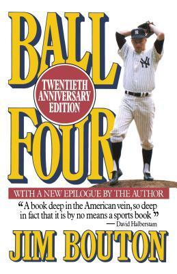

Ball Four
- Read on 2020-09-13
- Rating: ️️️️️
- Format: 🎧 (18 hours 39 minutes)
This was fun. It's an interesting, eye-opening, and highly humorous perspective of a year of baseball, as documented in a first-person journal and note format. It's also a snapshot of a time that in many ways is long gone ("good riddance" to some of it). I love baseball, and can only imagine attempting to be a professional player. Glorified and vilified for their performances, with lots of opportunity filled with risk and reward - all while trying support a family, and inevitably plan for life after your career.
What I maybe enjoyed even more were the various epilogues added by Bouton on several anniversaries (and republications) of the book. They continued to help the various people in the book become both more real, and answer some of the questions I asked myself during the main book.